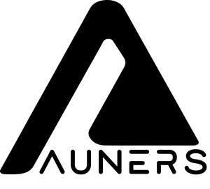

Trade Mark Journal No.2025/017 25 April 2025
UK00004187732 11 April 2025 (14,25,28)

- Class 14
- Watch bracelets; Alarm watches; Watch chains; Watch movements; Pendant watches; Watch bands; Watch straps; Springs (Watch - ); Electronic watches; Women's watches; Watch dials; Watch cases [parts of Pocket watches; Stop watches; Diving watches; Watch glasses; Quartz Watch casings; Chronographs Jewellery; Jewellery, including imitation jewellery and plastic jewellery; Jade Necklaces Precious jewellery; Cloisonné jewellery; Paste jewellery; Artificial jewellery; Charms [jewellery]; Pendants Jewellery items; Jewellery chains; Chains Body jewellery; Pewter jewellery; Lockets Jewellery findings; Crosses [jewellery]; Rings Jewellery (Paste - ); Amulets [jewellery]; Brooches [jewellery]; Jewellery brooches; Jewellery cases; Jewellery caskets; Jewellery articles; Jewellery stones; Ornaments [jewellery]; Enamelled jewellery; Wristlets [jewellery]; Bracelets [jewellery]; Pearls [jewellery]; Shoe jewellery; Imitation jewellery; Fashion jewellery; Costume jewellery; Facial jewellery; Personal jewellery; Cloisonne jewellery; Gold jewellery; Hat jewellery; Ivory jewellery; Fake jewellery; Trinkets [jewellery]; Jewellery charms; Pins [jewellery]; Jewellery boxes; Jewellery products; Jewellery chain; Jewellery rolls; Decorative brooches [jewellery]; Jewellery incorporating diamonds; Jewellery cases [fitted]; Wooden jewellery boxes; Rings being jewellery; Charms for jewellery; Items of jewellery; Plastic costume jewellery; Crucifixes as jewellery; Jewellery hat pins; Jewellery foot chains; Decorative pins [jewellery]; Imitation jewellery ornaments; Jewellery boxes [fitted]; Ring bands [jewellery]; Clasps for jewellery; Jewellery cases [caskets]; Body costume jewellery; Lapel pins [jewellery]; Jewellery incorporating pearls; Agate as jewellery; Amulets being jewellery; Articles of jewellery; Synthetic stones [jewellery]; Gold thread [jewellery]; Jewellery containing gold; Sterling silver jewellery; Pins being jewellery; Chains (Watch -); Watch faces; Table watches; Automatic watches; Watch winders; Platinum watches; Solar watches; Watch pouches; Watch crowns; Divers' watches; Sports watches; Watch crystals; Mechanical watches; Watch parts; Watch cases; Watch springs; Electric watches; Watch boxes; Watch fobs; Dress watches; Wrist watches; Wristlet watches; Watch hands; Silver watches; Parts for watches; Cases for watches; Bands for watches; Mechanical watch oscillators; Watches and clocks; Wrist watch bands; Chronographs as watches; Faces for watches; Bracelets for watches; Clocks and watches; Metal watch bands; Straps for watches; Leather watch straps; Chains for watches; Dials for watches; Oscillators for watches; Watches for nurses; Watches bearing insignia; Watch boxes [presentation]; Fittings for watches; Watch straps of nylon; Watch straps of plastic; Clocks and watches, electric; Presentation boxes for watches; Cases for watches [presentation]; Bracelets and watches combined; Metal expanding watch bracelets; Wrist straps for watches; Watches made of gold; Watches for outdoor use; Cases [fitted] for watches; Watches for sporting use; Pendants for watch chains; Straps for wrist watches; Watch and clock springs; Non-leather watch straps; Clock and watch hands; Watch and clock hands; Watch straps of polyvinyl chloride; Watches made of plated gold; Watch straps of synthetic material; Cases adapted for holding watches; Movements for clocks and watches; Electrically operated movements for watches; Barrels [clock and watch making]; Parts and fittings for watches; Watches containing a game function; Mechanical watches with automatic winding; Pendulums [clock and watch making]; Anchors [clock and watch making]; Movements for watches and clocks; Watches with wireless communication function; Cases for watches and clocks; Digital watches with automatic timers; Watches incorporating a memory function; Cases adapted to contain watches; Watches made of precious metals; Jewellery boxes and watch boxes; Dials [clock and watch making]; Electronically operated movements for watches; Housings for clocks and watches; Mechanical watches with manual winding; Watches made of rolled gold; Watches incorporating a telecommunication function; Chronographs for use as watches; Clocks and watches for pigeon-fanciers; Hands (Clock -) [clock and watch making]; Watches with the function of wireless communication; Watches containing an electronic game function; Cases for clock and watch-making; Dials for clock and watch-making; Dials for clock-and-watch-making; Cases of precious metals for watches; Dials for clock and watch making; Clock hands [clock and watch making]; Watch straps made of metal or leather or plastic; Watches made of precious metals or coated therewith; Key rings; Leather key rings; Decorative key rings; Retractable key rings; Charms for key rings; Key rings of leather; Non-metal key rings; Imitation leather key rings; Key rings [trinkets or fobs]; Key rings, not of metal; Key rings of precious metals; Key rings and key chains, and charms therefor; Key rings of precious metal; Retractable key rings [trinkets or fobs]; Key rings [split rings with trinket or decorative fob]; Key fobs [rings] coated with precious metal; Split rings of precious metal for keys; Key rings [trinkets or fobs] of precious metal; Key chains [split rings with trinket or decorative fob]; Key chains; Key fobs; Friendship rings; Platinum rings; Gold rings; Wedding rings; Rings [trinket]; Finger rings; Rings [jewelry]; Signet rings; Silver rings; Eternity rings; Engagement rings; Fobs for keys; Retractable key chains; Metal key chains; Leather key fobs; Key chain tags; Metal key fobs; Gold plated rings; Gold-plated rings; Silver-plated rings; Silver thread [jewellery]; Ornaments [jewellery, jewelry (Am.)]; Jewellery of precious metals; Beads for making jewellery; Clips of silver [jewellery]; Lockets [jewellery, jewelry (Am.)]; Articles of imitation jewellery; Amberoid pendants being jewellery; Jewellery fashioned from bronze; Cloisonné jewellery [jewelry (Am.)]; Jewellery made from gold; Ivory [jewellery, jewelry (Am.)]; Jewellery incorporating precious stones; Brooches [jewellery, jewelry (Am.)]; Amber pendants being jewellery; Gold plated brooches [jewellery]; Jewellery of yellow amber; Bracelets [jewellery, jewelry (Am.)]; Amulets [jewellery, jewelry (Am.)]; Trinkets [jewellery, jewelry (Am.)]; Chains [jewellery, jewelry (Am.)]; Jewellery for personal wear; Jewellery made from silver; Jewellery in precious metals; Necklaces [jewellery, jewelry (Am.)]; Jewellery made of bronze; Jewellery for personal adornment; Jewellery made of plastics; Medallions [jewellery, jewelry (Am.)]; Jewellery made of crystal; Pearls [jewellery, jewelry (Am.)]; Jewellery made of glass; Rings [jewellery, jewelry (Am.)]; Charms [jewellery, jewelry (Am.)]; Pins [jewellery, jewelry (Am.)]; Cabochons for making jewellery; Presentation boxes for jewellery; Jewellery fashioned of precious metals; Wire of precious metal [jewellery]; Paste jewellery [costume jewelry (Am.)]; Jewellery boxes of precious metals; Parts and fittings for jewellery; Jewellery in non-precious metals; Jewellery made of precious metals; Jewellery rope chain for anklets; Threads of precious metal [jewellery]; Jewellery rope chain for bracelets; Collets being parts of jewellery; Jewellery fashioned of cultured pearls; Jewellery caskets of precious metal; Jewellery boxes of precious metal; Precious stones; Spinel [precious stones]; Synthetic precious stones; Imitation precious stones; Semi-precious stones; Unwrought precious stones; Natural gem stones; Artificial gem stones; Figurines of precious stones; Jewellery made of precious stones; Precious and semi-precious stones; Objet d'art made of precious stones; Articles of jewellery with precious stones; Articles of jewellery with ornamental stones; Jewellery fashioned of semi-precious stones; Statuettes made of semiprecious stones; Jewellery being articles of precious stones; Gold; Gold alloys; Gold ingots; Gold coins; Gold chains; Gold earrings; Gold necklaces; Imitation gold; Gold bracelets; Gold medals; Gold bullion; Gold base alloys; Gold plated chains; Gold-plated earrings; Gold plated bracelets; Gold-plated necklaces; Gold plated earrings; Gold alloy ingots; Gold thread [jewelry]; Square gold chain; Figurines made from gold; Gold bullion coins; Gold thread jewelry; Cuff links made of gold; Figurines made of imitation gold; Gold, unworked or semi-worked; Objet d'art of enamelled gold; Gold thread [jewellery, jewelry (Am.)]; Horological instruments made of gold; Cuff links made of imitation gold; Spun silver [silver wire]; Silver; Silver ingots; Unwrought silver; Silver alloys; Silver-plated earrings; Silver bullion; Silver necklaces; Silver earrings; Silver thread; Silver-plated necklaces; Silver bracelets; Silver alloy ingots; Silver objets d'art; Unwrought silver alloys; Silver-plated bracelets; Silver thread [jewelry]; Figurines made from silver; Cuff links made of silver plate; Silver and its alloys; Silver, unwrought or beaten; Silver thread [jewellery, jewelry (Am.)]; Objet d'art of enamelled silver; Platinum; Platinum alloys; Platinum [metal]; Platinum ingots; Platinum jewelry; Platinum alloy ingots; Platinum and its alloys; Bracelets; Bracelet charms; Charity bracelets; Friendship bracelets; Bead bracelets; Bangle bracelets; Bracelets [charity]; Ankle bracelets; Bracelets [jewelry]; Identification bracelets [jewelry]; Wooden bead bracelets; Bracelets of precious metal; Identification bracelets of precious metal [jewelry]; Bracelets made of embroidered textile [jewelry]; Bracelets made of embroidered textile [jewellery]; Plastic bracelets in the nature of jewelry; Jewellery chain of precious metal for bracelets; Flexible wire bands for wear as a bracelet; Bracelets made of rubber or silicone with pattern or message.
- Class 25
- Clothing; Clothes; Wristbands [clothing]; Tops [clothing]; Knitted clothing; Oilskins [clothing]; Motorcyclists' clothing; Hoods [clothing]; Leisure clothing; Infant clothing; Children's clothing; Childrens' clothing; Sports clothing; Leather clothing; Gloves [clothing]; Waterproof clothing; Plush clothing; Girls' clothing; Swaddling clothes; Knitwear [clothing]; Cloth bibs; Cyclists' clothing; Playsuits [clothing]; Slipovers [clothing]; Jerseys [clothing]; Weatherproof clothing; Casual clothing; Denims [clothing]; Combinations [clothing]; Furs [clothing]; Shorts [clothing]; Collars [clothing]; Babies' clothing; Ties [clothing]; Outer clothing; Cashmere clothing; Bandeaux [clothing]; Women's clothing; Bodies [clothing]; Embroidered clothing; Layettes [clothing]; Jackets [clothing]; Kerchiefs [clothing]; Chaps (clothing); Maternity clothing; Thermal clothing; Belts [clothing]; Muffs [clothing]; Capes (clothing); Motorists' clothing; Boas [clothing]; Slips [clothing]; Veils [clothing]; Wraps [clothing]; Athletic clothing; Clothing for men, women and children; Footwear for men; Coats for men; Outerclothing for men; Socks for men; Footwear for men and women; Suspender belts for men; Bathing suits for men; Womens' outerclothing; Womens' underclothing; Womens' undergarments; Coats for women; Underclothing for women; Underwear for women; Footwear for women; Bathing costumes for women; Suspender belts for women; Headwear; Peaked headwear; Children's headwear; Caps [headwear]; Visors [headwear]; Bonnets [headwear]; Leather headwear; Fishing headwear; Caps being headwear; Visors being headwear; Sun visors [headwear]; Hats; Top hats; Miters [hats]; Beanie hats; Small hats; Woolly hats; Sun hats; Mitres [hats]; Baseball hats; Beach hats; Fur hats; Toques [hats]; Rain hats; Bobble hats; Ski hats; Fashion hats; Bucket hats; Fascinator hats; Chefs' hats; Cloche hats; Frames (Hat -) [skeletons]; Party hats [clothing]; Ushankas [fur hats]; Hats (Paper -) [clothing]; Hat frames [skeletons]; Paper hats [clothing]; Fake fur hats; Baseball caps and hats; Sports caps and hats; Sedge hats (suge-gasa); Paper hats for wear by chefs; Paper hats for wear by nurses; Paper hats for use as clothing items; Clothing for horse-riding [other than riding hats]; Head scarves; Scarves; Snoods [scarves]; Shoulder scarves; Cashmere scarves; Neck scarves; Silk scarves; Neck tube scarves; Neck scarves [mufflers]; Mufflers [neck scarves]; Mufflers as neck scarves; Hoodies; Jeans; Denim jeans; Blue jeans; Tshirts; Printed t-shirts; Short-sleeved T-shirts; Shirts; Golf shirts; Casual shirts; Sport shirts; Tennis shirts; Sleep shirts; Camouflage shirts; Under shirts; Pique shirts; Yokes (Shirt -); Sports shirts; Football shirts; Knit shirts; Fishing shirts; Turtleneck shirts; Rugby shirts; Polo shirts; Shirt yokes; Tee-shirts; Dress shirts; Shirt fronts; Ramie shirts; Hunting shirts; Woven shirts; Sweat shirts; Collared shirts; Soccer shirts; Night shirts; Aloha shirts; Yoga shirts; Shirt-jacs; Maternity shirts; Corduroy shirts; Button down shirts; Shirts and slips; Mock turtleneck shirts; Shirts for suits; Short-sleeve shirts; Short-sleeved shirts; Open-necked shirts; Hooded sweat shirts; Long-sleeved shirts; American football shirts; Button-front aloha shirts; Moisture-wicking sports shirts; Sports shirts with short sleeves; Padded shirts for athletic use; Snap crotch shirts for infants and toddlers; Under garments; Underwear; Briefs [underwear]; Disposable underwear; Knitted underwear; Women's underwear; Men's underwear; Functional underwear; Ladies' underwear; Long underwear; Jockstraps [underwear]; Thermal underwear; Trunks [underwear]; Maternity underwear; Anti-sweat underwear; Sweatabsorbent underwear; Babies' pants [underwear]; Underwear (Anti-sweat -); Boy shorts [underwear]; Sweat-absorbent underclothing [underwear]; Gussets for underwear [parts of clothing]; Jumpers; Jumper dresses; Jumpers [pullovers]; Jumper suits; Jumpers [sweaters]; Polo neck jumpers; Skirts; Pleated skirts; Tennis skirts; Culotte skirts; Skirt suits; Golf skirts; Pleated skirts for formal kimonos (hakama); Clothes for sport; Clothing for sports; Clothes for sports; Articles of sports clothing; Jackets being sports clothing; Sports clothing [other than golf gloves]; Sport stockings; Sports footwear; Sports overuniforms; Sports shoes; Sports garments; Sports pants; Sports bibs; Sports vests; Sports singlets; Sports wear; Sports jerseys and breeches for sports; Sports jackets; Sports socks; Sports caps; Sports jerseys; Sport shoes; Sports bras; Sport coats; Gloves; Wetsuit gloves; Motorcycle gloves; Driving gloves; Fingerless gloves; Camouflage gloves; Snowboard gloves; Cycling Gloves; Knitted gloves; Riding gloves; Riding Gloves; Winter gloves; Ski gloves; Gloves for apparel; Gloves as clothing; Gloves for cyclists; Fingerless gloves as clothing; Golf clothing, other than gloves; Gloves including those made of skin, hide or fur; Gloves with conductive fingertips that may be worn while using handheld electronic touch screen devices; Footwear; Footwear [excluding orthopedic footwear]; Pumps [footwear]; Infants' footwear; Children's footwear; Sneakers [footwear]; Rubbers [footwear]; Golf footwear; Athletics footwear; Athletic footwear; Footwear uppers; Casual footwear; Footwear soles; Fishing footwear; Ladies' footwear; Beach footwear; Climbing footwear; Trainers [footwear]; Uppers (Footwear -); Leisure footwear; Tips for footwear; Wooden shoes [footwear]; Soles for footwear; Heelpieces for footwear; Insoles for footwear; Footwear (Tips for -); Footwear for sport; Footwear for sports; Footwear for snowboarding; Welts for footwear; Footwear (Welts for - ); Footwear made of wood; Traction attachments for footwear; Inner socks for footwear; Footwear made of vinyl; Footwear not for sports; Footwear for use in sport; Fittings of metal for footwear; Non-slipping devices for footwear; Footwear (Nonslipping devices for -); Footwear (Fittings of metal for -); Japanese split-toed work footwear (jikatabi); Footwear for track and field athletics; Flip-flops for use as footwear; Parts of clothing, footwear and headgear; Japanese footwear of rice straw (waraji); Shoes; Bowling shoes; Snowboard shoes; Dress shoes; Basketball shoes; Cycling shoes; Running shoes; Walking shoes; Hiking shoes; Hockey shoes; Soccer shoes; Baseball shoes; Rubber shoes; Aqua shoes; Leisure shoes; Shoe straps; Baby shoes; Riding shoes; Work shoes; Wooden shoes; Golf shoes; Jogging shoes; Anglers' shoes; Canvas shoes; Women's shoes; Athletic shoes; Training shoes; Flat shoes; Tap shoes; Platform shoes; Gymnastic shoes; Dance shoes; Deck shoes; Mountaineering shoes; Football shoes; Infants' shoes; Shoe uppers; Shoe soles; Yoga shoes; Driving shoes; Roller shoes; Ballet shoes; Handball shoes; Boxing shoes; Volleyball shoes; Rugby shoes; Deck-shoes; Rain shoes; Leather shoes; Beach shoes; Tennis shoes; Athletics shoes; Skiing shoes; Waterproof shoes; Nursing shoes; Stiffeners for shoes; Spiked running shoes; Slip-on shoes; Shoes for infants; Ballroom dancing shoes; Foot volleyball shoes; Knitted baby shoes; Hidden heel shoes; High-heeled shoes; Apres-ski shoes; Shoes for leisurewear; Shoe soles for repair; Track and field shoes; Shoes for casual wear; Shoes for foot volleyball; Sports over uniforms; Boots for sports; Combative sports uniforms; Sports [Boots for -]; Boots for sport; Aprons; Plastic aprons; Aprons [clothing]; Paper aprons; Slipper socks; Woollen socks; Pop socks; Footless socks; Water socks; Toe socks; Yoga socks; Men's dress socks; Sweat-absorbent socks; Gym shorts; Gym boots; Gym suits; Socks; Men's socks; Bed socks; Trouser socks; Ankle socks; Anklets [socks]; Sock suspenders; Tennis socks; Thermal socks; American football socks; Non-slip socks; Anti-perspirant socks; Socks and stockings; Japanese style socks (tabi); Japanese style socks (tabi covers); Socks for infants and toddlers; Sweaters; Turtleneck sweaters; Polo sweaters; Crew neck sweaters; V-neck sweaters; Mock turtleneck sweaters; Esparto shoes or sandles.
- Class 28
- Games; Parlor games; Arcade games; Target games; Quiz games; Go games; Checkers games; Cards [games]; Skittles [games]; Memory games; Chess games; Gaming chips; Ring games; Mechanical games; Board games; Boards games; Dart games; Building games; Game cards; Gaming apparatus; Pinball games; Game consoles; Games consoles; Gaming keypads; Gaming mice; Sports games; Parlour games; Electronic games; Backgammon games; Hockey games; Musical games; Horseshoe games; Boule games; Draughts [games]; Dice games; Party games; Bowls [games]; Manipulative games; Gaming tables; Checkers [games]; Card games; Gaming machines; Interactive gaming chairs for video games; Game boards for trading card games; Balls for games; Games (Balls for - ); Quoits [ring games]; Trading card games; Electronic dart games; Video game consoles; Portable gaming devices; Handheld game consoles; Table-top games; Role play games; Video game joysticks; Gloves for games; Mah jong games; Arcade game machines; Bag toss games; Manipulative logic games; Chinese checkers [games]; Chinese checkers games; Gaming chip sets; Computer game joysticks ; Coin-operated games; Paddle ball games; Handheld electronic games; Ring toss games; Racing car games; Role playing games; Ring games [quoits]; Sugoroku board games; Computer game apparatus; Computer games apparatus; Hunting game calls; Console gaming devices; Steering wheel shaped game controllers for driving games; LCD game machines; Games (Apparatus for -); Apparatus for games; Action skill games; Automatic gaming machines; Marbles for games; Games (Marbles for - ); Video game apparatus; Video game machines; Electronic board games; Mah-jongg games; Bats for games; Counters for games; Game calls (Hunting -); Tabletop basketball games; Amusement game machines; Toy watches; Toy clocks and watches; Toys; Toy bakeware and toy cookware; Toy banks; Toy horns; Bathtub toys; Toy balls; Toy tools; Toy wheelbarrows; Educational toys; Developmental toys; Children's toys; Infant toys; Toy dolls; Toy flowers; Fabric toys; Toy projectors; Toy tents; Pet toys; Squeeze toys; Toy swords; Toy playsets; Toy trumpets; Push toys; Puzzles [toys]; Windup toys; Toy hats; Toy harmonicas; Toy automobiles; Toy pistols; Fluffy toys; Sand toys; Smart toys; Intelligent toys; Wheeled toys; Toy dogs; Mechanical toys; Toy plants; Toy figures; Bath toys; Toy balloons; Action toys; Toy castles; Toy whistles; Dog toys; Toy bakeware; Model toys; Toy fish; Toy guitars; Toy bicycles; Toy holsters; Sketching toys; Talking toys; Rocking toys; Toy fireworks; Toy cars; Toy weapons; Cuddly toys; Plush toys; Toy windmills; Drones [toys]; Masks (Toy - ); Toy masks; Toy pinwheels; Drawing toys; Modular toys; Assembly toys; Fidget toys; Toy lorries; Toy jewellery; Toy figurines; Wooden toys; Toy telephones; Rattles [toys]; Whistles [toys]; Cloth toys; Toy scooters; Water toys; Toy furniture; Toy houses; Toy models; Toy cookware; Inflatable toys; Toy binoculars; Toy trains; Toy airplanes; Toy periscopes; Toy robots; Mobiles [toys]; Toy mobiles; Toy blocks; Toy pianos; Electronic toys; Toy boats; Toy fingernails; Stuffed toys; Toy animals; Toy arrows; Toy armor; Crib toys; Toy microscopes; Toy dough; Toy trucks; Toy pushchairs; Toy strollers; Toy cameras; Toy birds; Toy gliders; Toy glockenspiels; Bouncing toys; Noisemakers [toys]; Whistling toys; Toy rockets; Pull toys; Toy tableware; Scooters [toys]; Toy nuchukus; Toy prams; Toy garages; Toy wagons; Punching toys; Toy food; Toy aeroplanes; Toy aircraft; Toy microphones; Plastic toys; Toy xylophones; Sandbox toys; Musical toys; Toy sets; Toy brooches; Toy vehicles; Construction toys; Toy guns; Pistols (Toy -); Soft toys; Bendable toys; Toy putty; Stacking toys; Toy telescopes; Outdoor toys; Clockwork toys; Toy record players; Toy building structures; Stress relief exercise balls; Squeezable balls used to relieve stress; Stress relief balls for hand exercise; Ball inflators; Cricket balls; Golf balls; Sport balls; Exercise balls; Medicine balls; Floorball balls; Tether balls; Volley balls; Playing balls; Soccer balls; Squash balls; Softball balls; Bowling balls; Bandy balls; Ball catchers; Rugby balls; Billiard balls; Play balls; Lacrosse balls; Beach balls; Ball nets; Racketball balls; Ball holders; Tennis balls; Futsal balls; Ball pumps; Rubber balls; Playground balls; Punching balls; Paddle balls; Baseball balls; Polo balls; Petanque balls; Sports balls; Gym balls; Bocce balls; Soft tennis balls; Racquet ball nets; Ball pitching machines; Platform tennis balls; Billiard ball triangles; Billiard tally balls; Water polo balls; Racquet ball gloves; Balls for sports; Tennis ball retrievers; Children's punch balls; Balls for play; Balls for juggling; Table-tennis balls; Table tennis balls; Soccer ball bags; Pilates toning balls; Billiard ball racks; Ball inflator adaptors; Golf ball markers; Inflatable beach balls; Golf ball retrievers; Lacrosse ball bags; Pool tally balls; Field hockey balls; Bowling ball returns; Soccer ball knee pads; Punching balls for boxing; Balls being sporting articles; Balls for playing lacrosse; Balls for playing sports; Gym balls for yoga; Inflatable balls for sports; Tennis ball serving machines; Spring-supported punch balls; Balls for playing petanque; Nets for ball games; Soccer ball goal nets; Balls for playing racketball; Balls for playing dodgeball; Balls for playing games; Balls for playing paddleball; Balls for playing handball; Tennis ball throwing apparatus; Tennis ball throwing machines; Bats for ball games; Balls for playing bocce; Ball launchers for pets; Tennis balls [not soft]; Floor-mounted punch balls; Sport hoops; Sports equipment; Sporting articles; Bats [sporting articles]; Sleighs [sports articles]; Sledges [sporting articles]; Rings for sports; Sandboxes [sporting articles]; Hammers for sports; Putters [sporting apparatus]; Sports training apparatus; Springboards for sports; Discuses for sports; Slingshots [sporting articles]; Slingshots [sports articles]; Nets for sports; Skeletons [sports articles]; Gloves for sports; Sports bows [archery]; Sleds [sports articles]; Javelins [sporting articles]; Toy sporting apparatus; Crossbows [sporting apparatus]; Paintballs [sports apparatus]; Paintball guns [sports apparatus]; Protective padding for sports; Screens (Camouflage -) [sports articles]; Spring boards [sporting articles]; Bob sleds [sporting apparatus]; Christmas tree decorations; Decorations for Christmas trees; Tinsel for decorating Christmas trees; Christmas tree decorations and ornaments; Dart wallets; Bag stands for golf bags; Cricket bags; Punching bags; Ski bags; Golf bags; Bowling bags; Bowls bags; Inflatable bop bags; Golf tee bags; Bags for fishing; Bowling bags (adapted); Bean bag dolls; Bags adapted for sporting articles; Bags adapted for carrying sporting articles; Bags specially adapted for sports equipment; Bags adapted to carry sports implements; Exercise bikes; Exercise bicycles (Stationary -); Stationary exercise bicycles; Bicycles (Stationary exercise - ); Go stones; Curling stones; Gymnastic articles; Gymnastic apparatus; Gymnastics rings; Gymnastic benches; Gymnastic training stools; Springboards [for gymnastic]; Gymnastic uneven bars; Rings for gymnastics; Clubs for gymnastics; Gymnastic parallel bars; Gymnastics (Appliances for -); Appliances for gymnastics; Beams [gymnastic apparatus]; Rhythmic gymnastics ribbons; Parallel bars [for gymnastic]; Benches for gymnastic use; Ribbons for rhythmic gymnastics; Gymnastic and sporting articles; Parallel bars for gymnastics; Clubs for rhythmic gymnastics; Portable home gymnastic apparatus; Horizontal bars [for gymnastic]; Pommel horses [for gymnastic]; Balance beams [for gymnastic]; High bars for gymnastics; Ropes for rhythmic gymnastics; Hoops for rhythmic sportive gymnastics; Ribbons specially adapted for rhythmic sportive gymnastics; Baby gyms; Jungle gyms [play equipment]; Exercise bars; Bar-bells; Uneven bars; Parallel bars; Gym chalk for improving hand grip in sports activities; Spring bars for exercise; Spring bars for exercising; Doorway pull-up bars; Exercise weights; Fishing weights; Weight lifting benches; Weight lifting belts; Weight lifting gloves; Tungsten weights for fishing; Leg weights for exercising; Wrist weights for exercise; Barbells for weight lifting; Dumbbells for weight lifting; Leg weights [sports articles]; Dumb-bells [for weight lifting]; Belts (Weight lifting -) [sports articles]; Leg weights for athletic use; Weight lifting belts [sports articles]; Weight lifting machines for exercise; Bar-bells [for weight lifting]; Leg weights for sports training; Lifting grips for weight lifting; Dumbbell shafts for weight lifting; Ankle and wrist weights for exercise; Wrist and ankle weights for exercise; Dumb-bell shafts [for weight lifting]; Tapes with weights for balancing tennis racquets; Machines incorporating weights for use in physical exercise; Exercise benches; Sit up benches; Benches for sporting use; Pop up toys; Wind-up toys; Stand-up paddleboards; Push up stands; Push-up handles; Standup paddle boards; Wind-up walking toys; Rotating push-up handles; Magnetic levitation toy figures; Magnetic putty being toys; Magnetic building blocks being toys; Manipulative logic puzzles; Spinning fidget toys; Basketballs; Basketball hoops; Basketball backboards; Basketball goals; Basketball nets; Backboards for basketball; Basketball baskets; Basketball finger guard; Arcade basketball shooting games; Basketball finger guards; Basketball backboards made of glass.
Great Gadgets Ltd